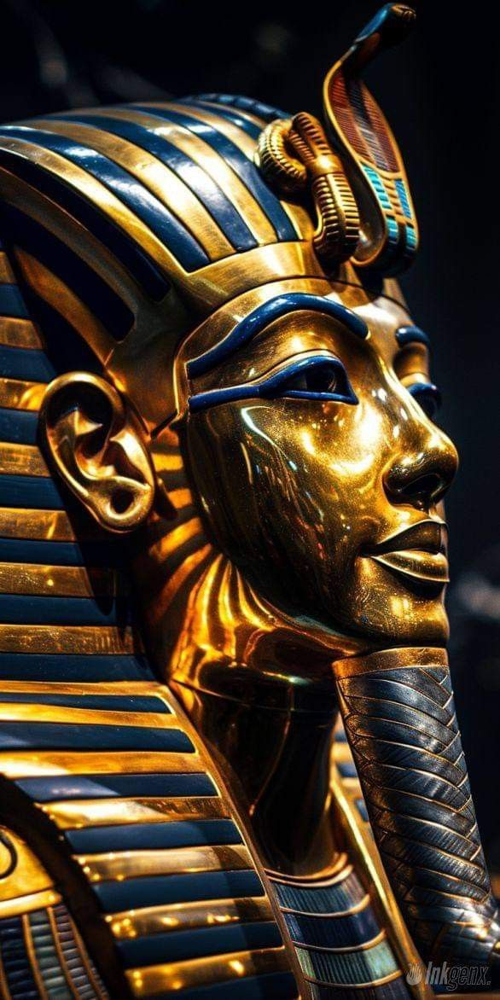
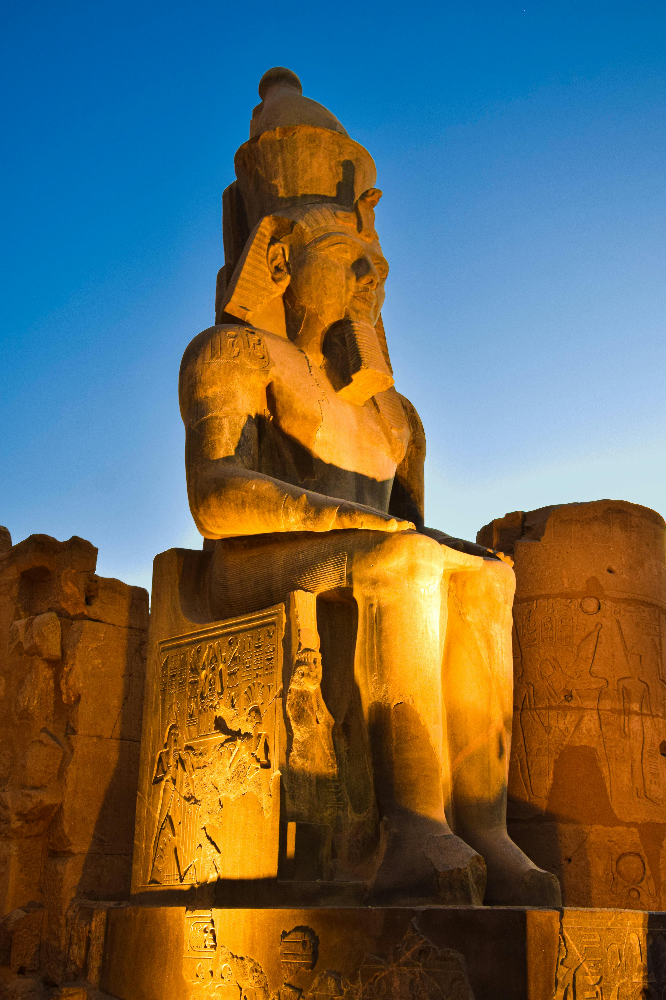
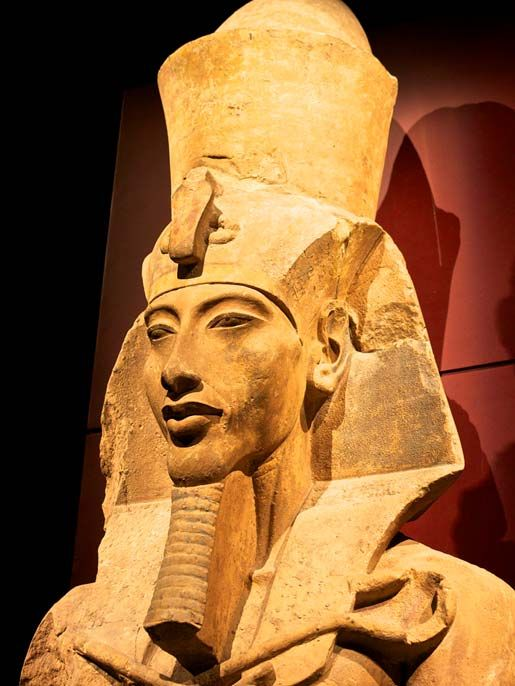
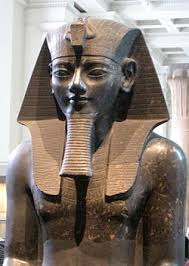
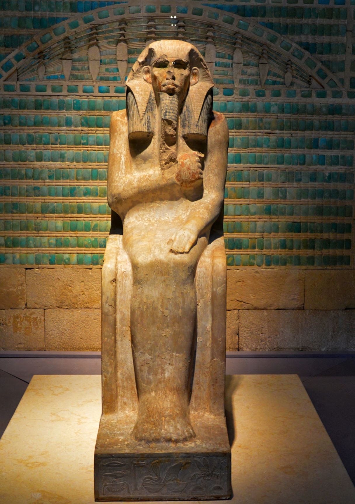
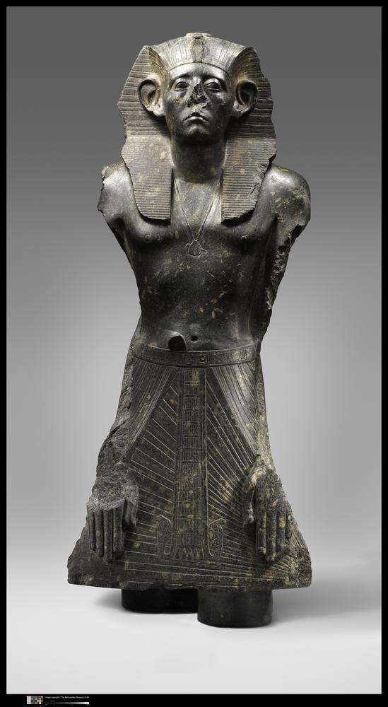
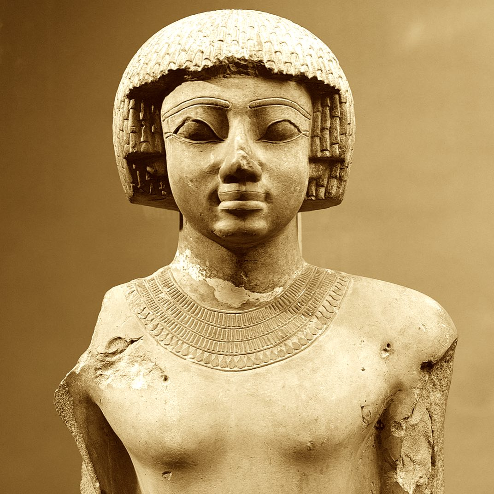

Tutankhamun
Was the antepenultimate pharaoh of the Eighteenth Dynasty of ancient Egypt,
who ruled c. 1332 – 1323 BC. Born Tutankhaten,
he instituted the restoration of the traditional polytheistic form of
ancient Egyptian religion,
undoing a previous shift to the religion known as Atenism.
Tutankhamun's reign is considered one of the greatest restoration periods in ancient Egyptian history,
and his tomb door proclaims his dedication to illustrative constructions of the ancient Egyptian gods.
more details

ThutmoseIII
was the fifth pharaoh of the 18th Dynasty of Egypt. He is regarded as one of the greatest warriors,
military commanders, and military strategists of all time; as Egypt's preeminent warrior pharaoh and
conqueror; and as a dominant figure in the New Kingdom period. Officially, Thutmose III ruled Egypt from
28 April 1479 BC until his death on 11 March 1425 BC. But for the first 22 years of his reign,
he was coregent with his stepmother and aunt, Hatshepsut, who was named pharaoh. He became
sole ruler after Hatshepsut's death in 1458.
more details

Ramsses II
Was the third pharaoh of the Nineteenth Dynasty of Egypt.
Ramesses II is regarded as the greatest, most celebrated,
and most powerful pharaoh of the New Kingdom, which itself was
the most powerful period of ancient Egypt. He is also widely
considered one of ancient Egypt's most successful warrior pharaohs,
conducting no fewer than 15 military campaigns, all resulting in victories,
excluding the Battle of Kadesh, which is generally considered a stalemate.
His 66-year rule was also the longest recorded reign of any pharaoh
(and one of the longest in history), possibly alongside Pepi II,
who lived 1000 years earlier and is said to have reigned for over 90 years.
more details

Akhenaten
Was an ancient Egyptian pharaoh reigning c. 1353–1336 or 1351–1334 BC,the tenth ruler of
the Eighteenth Dynasty. Originally named Amenhotep IV (Ancient Egyptian: jmn-ḥtp, meaning "Amun is satisfied",
Hellenized as Amenophis IV), in the fifth year of his reign he adopted the name "Akhenaten".
As a pharaoh, Akhenaten is noted for abandoning the traditional, polytheistic ancient Egyptian religion,
and introducing Atenism, or worship centered around Aten.
more details

AmenhotepIII
Was the ninth pharaoh of the Eighteenth Dynasty. According to different authors following the "Low Chronology",
he ruled Ancient Egypt from June 1386 to 1349 BC, or from June 1388 BC to December 1351 BC/1350 BC, after
his father Thutmose IV died. Amenhotep was Thutmose's son by a minor wife, Mutemwiya.
more details

Djoser
Was an ancient Egyptian pharaoh of the 3rd Dynasty during the Old Kingdom, and was the founder of that epoch.
He is also known by his Hellenized names Tosorthros (from Manetho) and Sesorthos (from Eusebius). He was the son of
King Khasekhemwy and Queen Nimaathap, but whether he was also the direct successor to their throne is unclear.
Most Ramesside king lists identify a king named Nebka as preceding him, but there are difficulties in connecting
that name with contemporary Horus names, so some Egyptologists question the received throne sequence.
Djoser is known for his step pyramid, which is the earliest colossal stone building in ancient Egypt.
more details

Senusret III
Was the fifth king of the late 12th Dynasty of the Egyptian Middle Kingdom. His military campaigns
gave rise to an era of peace and economic prosperity that reduced the power of regional rulers
and led to a revival in craftwork, trade, and urban development. Senusret III was among
the few Egyptian kings who were deified and honored with a cult during their own lifetime.
more details

Ahmose I
was a pharaoh and founder of the Eighteenth Dynasty of Egypt in the New Kingdom of Egypt,
the era in which ancient Egypt achieved the peak of its power. His reign is usually dated
to the mid-16th century BC at the beginning of the Late Bronze Age.
more details